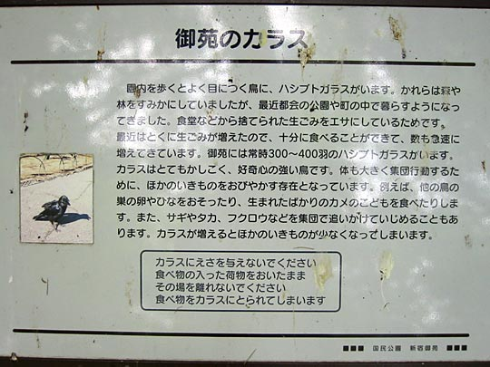

The park is divided into traditional Japanese garden, informal English landscape garden, and French formal gardens. We drew in our route on the map above (black dotted line).
Kelly camouflaged like a moth against a giant plane tree (much like London's). In the background, you can just make out somebody photographing the dove tree.
Standing under the dove tree.
Some info I found here: Davidia involucrata, also known as the Ghost Tree or the Handkerchief Tree. This is the tree that Ernest Wilson (Chinese Wilson) first went to China to collect. Some say it is the most unusual and beautiful tree in the kingdom. Takes 10 years before blooming.
These trees — not sure what they were — made these strange air-roots. In between, a field of chinkerinchee-like white flowers

I put this photo here since I'm curious about what it says about Tokyo's crows, and I'm hoping someone can translate this for me some day.
UPDATE 22/6/03: I didn't think it would be so soon! Kurt Keller sent this translation:
Gyoen crows
When strolling through the park, you'll see many Hashibuto crows. They used to live in forests, but now can also be found around parks in the cities and in fields. They feed on food thrown away by humans. Since we tend to fill our dustbins with ever more food, there's more than enough for the crows. Thus their number rapidly increases. In Gyoen park there are currently around 300-400 Hashibuto crows. Clever and curious, as they are, with a large body and the tendency to act in groups, they are scary or even dangerous for other animals. For example they attack the nests and hatched young of other birds and eat new born turtles. In groups they even attack herons, eagles or owls and drive them away. When the number of crows increases, the number of other animals decreases.
Don't feed the crows. Don't leave bags with food unattended, as the crows would go and steal the food.
Emerging from the forest into perhaps the best classical Japanese gardens we had seen all holiday
Yoyogi RC again. Some turbulence in the water at the foot of the bridge is caused by carp fighting.

Stone lantern
Some insight into how these pine trees get their perfectly picturesque shapes. Regular manicures. Even the branches are scrubbed clean of loose bark.
Stone lantern, maples and blossoms
Chinese-style pavilion and tea-house. Also Wisteria trellis. They were just starting to bloom.

Late sakura
Solidly-constructed benches
We may have missed most of the cherry blossom season (which would've meant serious crowds), but having the blossoms underfoot and not overhead was a startling sight in itself
Bit like Hyde Park (and so it should be — this is the English-style part of the park). Lots of families picknicking.
Eating riceballs

Our only timer-photo of the holiday?
Azaleas in the French-style formal garden area
Man sketching
Spidery red maple
A beautiful bright-yellow ladybird on a gingko leaf. Try as I might with the macro, I couldn't get it into focus. Tired Kelly.